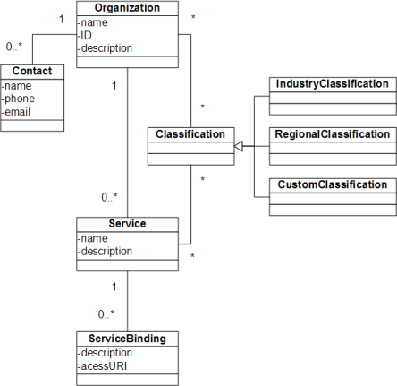
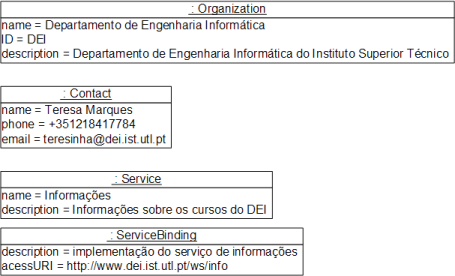

A UDDI (Universal Description, Discovery and Integration) permite o registo e descoberta de Web Services, de forma dinâmica.
Os Web Services são registados num directório (registry) que é disponibilizado por um ou mais servidores.
As operações suportadas pelo directório UDDI são:
As pesquisas podem ser de diferentes tipos:
A informação guardada no UDDI é estruturada da seguinte forma:

A entidade principal do esquema é a organização.
Uma organização pode ter pessoas de contacto.
Uma organização pode ter serviços.
Os serviços podem ter implementações (bindings).
Quer as organizações, quer os próprios serviços
podem ter classificações, que podem ser
industriais (ex. serviço de banca electrónica),
regionais (ex. serviço localizado em Portugal)
ou à medida.
A figura seguinte exemplifica um registo de serviço:

O serviço de informações pertence ao DEI e está disponível no endereço indicado.
© Docentes de Computação Distribuída, Dep. Eng. Informática, Universidade Lusófona